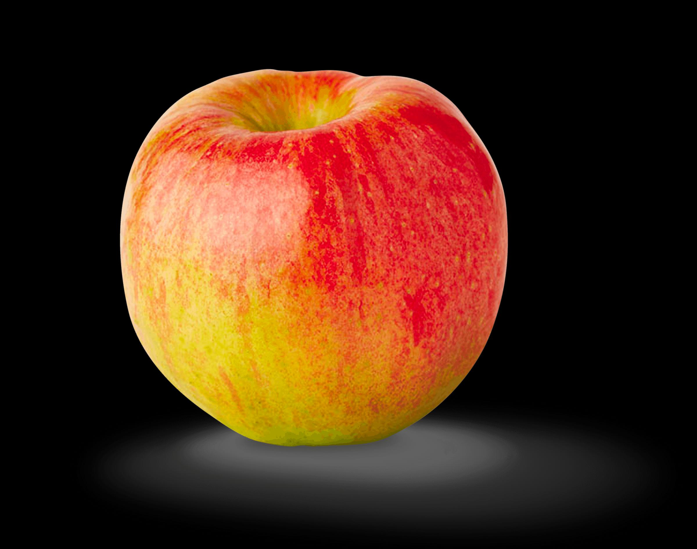

Christina's Portfolio - About MeDocumentWelcome to my design portfolio!
Let me take a second to introduce myself

About Me
I'm a passionate graphic designer with over 5 years of experience in the industry.
I began my career at a small design agency, where I gained valuable experience in branding, print design, and web design.
I became known for my attention to detail, creativity, and ability to bring client visions to life.
I have since moved on to work as a freelance graphic designer, working with a range of clients across various industries, and take pride in delivering high-quality design work.
In my free time, I enjoy exploring new design trends and experimenting with different mediums to expand my creative abilities.
I also enjoy hiking, traveling, and spending time with my dog, Max.